Registro y Control de Asistencias de Pasantes
Guía para el rol: Tutor — ISP Bolívar
| Campo | Valor |
|---|---|
| Título | Manual de Usuario — Aplicación Web para el Registro y Control de Asistencias de Pasantes (SGP) |
| Versión | 1.0 |
| Fecha de emisión | 11/06/2026 |
| Rol del manual | Tutor |
| Elaborado por | Luis Gabriel Yanez Prieto |
| Plataforma | Aplicación Web (PHP/MVC) — Alojada en servidor XAMPP |
Tabla de Contenido
El Sistema de Gestión de Pasantías (SGP) es una aplicación web institucional desarrollada para el Instituto de Salud Pública del Estado Bolívar. Su propósito central es digitalizar y centralizar la administración de las pasantías y el servicio comunitario, garantizando trazabilidad, eficiencia operativa y cumplimiento de los estándares académicos.
El SGP integra en una sola plataforma los procesos de: registro y control de pasantes, seguimiento de asistencias diarias, gestión de actividades académicas, administración de períodos académicos, generación de reportes certificados y control de acceso por roles.
El sistema abarca todo el ciclo de vida de la pasantía: desde la inscripción del pasante hasta la emisión de la constancia de culminación, pasando por el registro diario de asistencias, la evaluación y las actividades complementarias.
Este manual está dirigido a los perfiles de usuario que opera el sistema. Esta versión del documento corresponde al rol Tutor y describe las funciones disponibles para dicho rol:
| Rol | Descripción | Módulos principales |
|---|---|---|
| Administrador | Coordinador de Pasantías o personal de TI. Acceso total al sistema. | Todos los módulos |
| Tutor | Docente o profesional asignado al seguimiento del pasante. | Asistencias, Actividades, Evaluaciones, Reportes |
| Pasante | Estudiante realizando su pasantía o servicio comunitario. | Dashboard, Asistencias, Bitácora, Perfil, Constancia |
| Convención | Significado |
|---|---|
| Administrador | Funcionalidad disponible solo para el rol Administrador |
| Tutor | Funcionalidad disponible para Tutor y/o Administrador |
| Pasante | Funcionalidad disponible para el pasante (incluida aquí como referencia) |
| Botón | Elemento interactivo en la interfaz (botón, tecla, campo) |
Las imágenes de interfaz mostradas en este manual son de referencia. La apariencia exacta puede variar según el período activo, los datos registrados y el rol del usuario.
| Navegador | Versión mínima | Versión recomendada | Estado |
|---|---|---|---|
| Google Chrome | 90 | 120+ | ✅ Totalmente compatible |
| Microsoft Edge | 90 | 120+ | ✅ Totalmente compatible |
| Mozilla Firefox | 88 | 115+ | ✅ Totalmente compatible |
| Safari | 14 | 16+ | ⚠️ Compatible (sin garantía en PDF) |
| Internet Explorer | — | — | ❌ No soportado |
El Kiosco de Asistencias debe operar en un equipo dedicado con Google Chrome en modo pantalla completa (F11), conectado a la red local de la institución.
El SGP utiliza autenticación mediante Correo Electrónico y Contraseña. Las credenciales son asignadas por el Administrador del sistema.
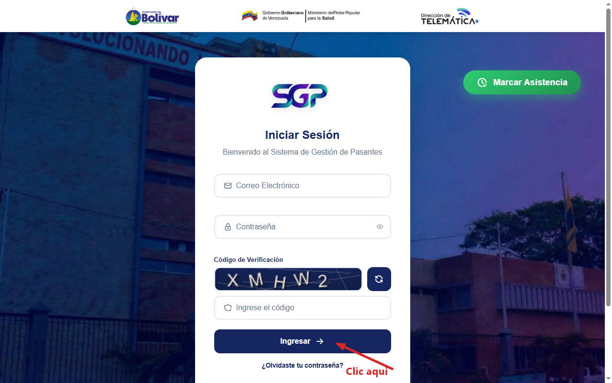
Abrir el navegador e ingresar la URL del sistema proporcionada por el Departamento de TI.
En el campo Cédula de Identidad, ingresar el número de cédula sin puntos ni espacios.
En el campo Contraseña, ingresar la contraseña asignada (distingue mayúsculas/minúsculas).
Hacer clic en el botón Iniciar Sesión. El sistema validará las credenciales y redirigirá al Dashboard del rol correspondiente.
Seguridad: Después de 5 intentos fallidos de inicio de sesión, la cuenta puede quedar bloqueada temporalmente. Si olvida su contraseña, contacte al Administrador del sistema para que la restablezca.
Para cerrar la sesión correctamente:
Localizar el menú de usuario en la esquina superior derecha de la barra de navegación (muestra el nombre del usuario y un avatar).
Hacer clic sobre el avatar o nombre de usuario para desplegar el menú desplegable.
Seleccionar la opción Cerrar Sesión. El sistema finalizará la sesión y redirigirá a la página de inicio de sesión.
No cierre el navegador directamente sin cerrar sesión, especialmente en equipos compartidos. Esto puede dejar la sesión activa y comprometer la seguridad de la cuenta.
Si olvidas tu contraseña, puedes recuperarla de forma autónoma sin intervención del Administrador, siempre que tengas preguntas de seguridad configuradas en tu cuenta. El proceso se inicia desde el enlace ¿Olvidaste tu contraseña? en la pantalla de inicio de sesión y consta de 3 pasos.
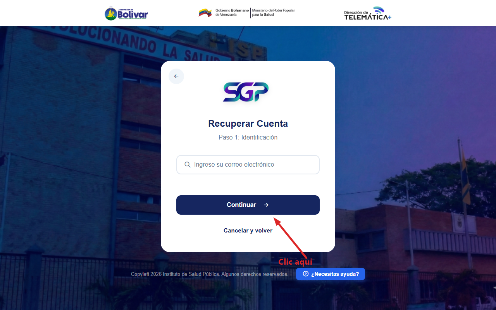
Paso 1 — Identificación: ingresar el correo electrónico registrado y hacer clic en Continuar.
Paso 2 — Preguntas de seguridad: responder las 3 preguntas de seguridad configuradas durante el primer acceso ("La Jaula", Capítulo 4) y hacer clic en Verificar.
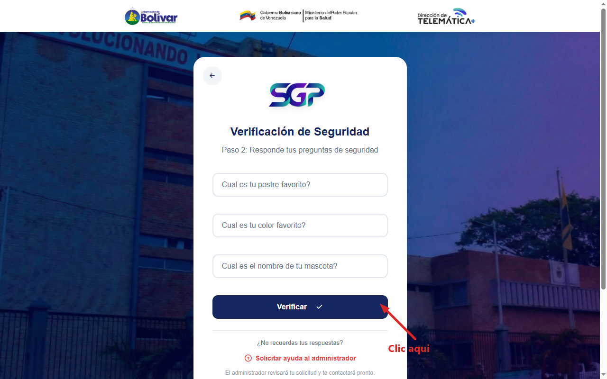
Paso 3 — Nueva contraseña: si las 3 respuestas son correctas, el sistema permite definir una nueva contraseña (mínimo 8 caracteres) y confirmarla.
La nueva contraseña no puede ser igual a la contraseña temporal del sistema (formato Sgp.{cédula}).
Si la cuenta no tiene preguntas de seguridad configuradas (por ejemplo, cuentas creadas directamente en la base de datos, o que aún no completaron "La Jaula"), el sistema muestra el mensaje "Cuenta sin preguntas de seguridad configuradas" y este medio de recuperación no está disponible. En ese caso, debes contactar al Administrador para que restablezca tu contraseña manualmente.
"La Jaula" es el nombre con el que el equipo de desarrollo identifica al asistente de configuración de seguridad que el sistema presenta de forma obligatoria justo después del primer inicio de sesión exitoso de una cuenta cuyo perfil de seguridad está incompleto. Mientras "La Jaula" está activa, no puedes acceder a ningún otro módulo: no hay panel lateral ni barra superior, solo el formulario del paso actual y la opción de cerrar sesión.
El sistema decide automáticamente cuántos y cuáles de los 4 pasos mostrar, según el origen de la cuenta:
| Origen de la cuenta | ¿Cómo se llegó a este estado? | Pasos del Wizard mostrados |
|---|---|---|
| Creada por Admin/SuperAdmin | Contraseña temporal Sgp.{cédula}, requiere_cambio_clave = 1 y 0 preguntas de seguridad guardadas | Los 4 pasos completos |
| Restablecimiento de contraseña | Un Admin/SuperAdmin reseteó la contraseña a Sgp.{cédula} de una cuenta que ya tenía el perfil completo (≥3 preguntas) | Solo Pasos 1 y 2 (Contraseña + Preguntas) |
| Autoregistro (exclusivo de cuentas Pasante) | El propio pasante eligió su contraseña y sus 3 preguntas de seguridad al registrarse | Solo Pasos 3 y 4 (Datos Personales + Perfil Profesional) |
El indicador de pasos en la parte superior del formulario refleja cuántos pasos verás: 2 círculos para las variantes reducidas, o 4 círculos para el Wizard completo.
Este paso solo aparece cuando requiere_cambio_clave = 1 (cuentas nuevas creadas por un Administrador, o cuentas con contraseña restablecida).
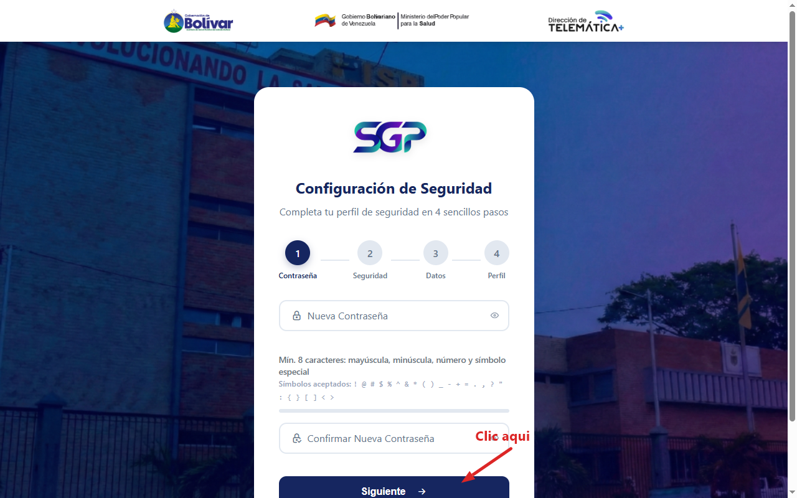
Ingresar la nueva contraseña en Nueva Contraseña. Debe cumplir los 5 requisitos que se muestran debajo del campo: mínimo 8 caracteres, una mayúscula, una minúscula, un número y un carácter especial. Cada requisito se marca en verde a medida que se cumple, y la barra de fortaleza cambia de color (rojo → naranja → verde).
Repetir la misma contraseña en Confirmar Nueva Contraseña.
Hacer clic en Siguiente.
La nueva contraseña no puede ser igual a la contraseña temporal Sgp.{cédula}. Si coincide, el sistema rechaza el paso con el mensaje "No puedes usar tu contraseña temporal como contraseña permanente".
Igual que el Paso 1, solo aparece cuando requiere_cambio_clave = 1. Permite configurar las 3 preguntas de seguridad que luego se usarán en Recuperación de Contraseña (sección 3.3).
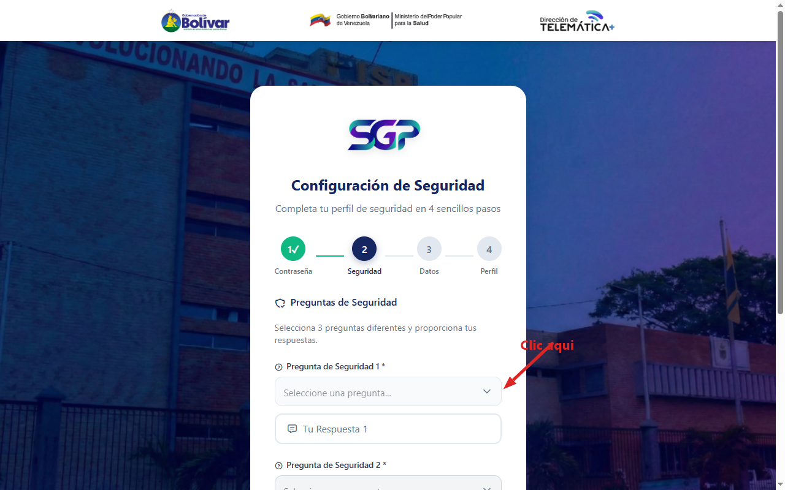
Para cada una de las 3 preguntas, abrir el menú desplegable y seleccionar una pregunta de la lista. El sistema deshabilita automáticamente las preguntas ya elegidas en los otros campos para evitar duplicados.
Escribir una respuesta en el campo Tu Respuesta correspondiente a cada pregunta.
Hacer clic en Siguiente (o en Finalizar y Entrar si la cuenta solo requiere los Pasos 1-2 — ver sección 4.6).
Estas respuestas se guardan cifradas y son las que deberás recordar para recuperar tu contraseña sin ayuda del Administrador (sección 3.3). Conviene elegir respuestas fáciles de recordar pero difíciles de adivinar para terceros.
Este paso recopila los datos personales que aún falten. La parte superior muestra una tarjeta de identidad de solo lectura con los datos oficiales asignados por Administración (Nombre, Apellido, Cédula y Correo); estos campos no son editables desde aquí.
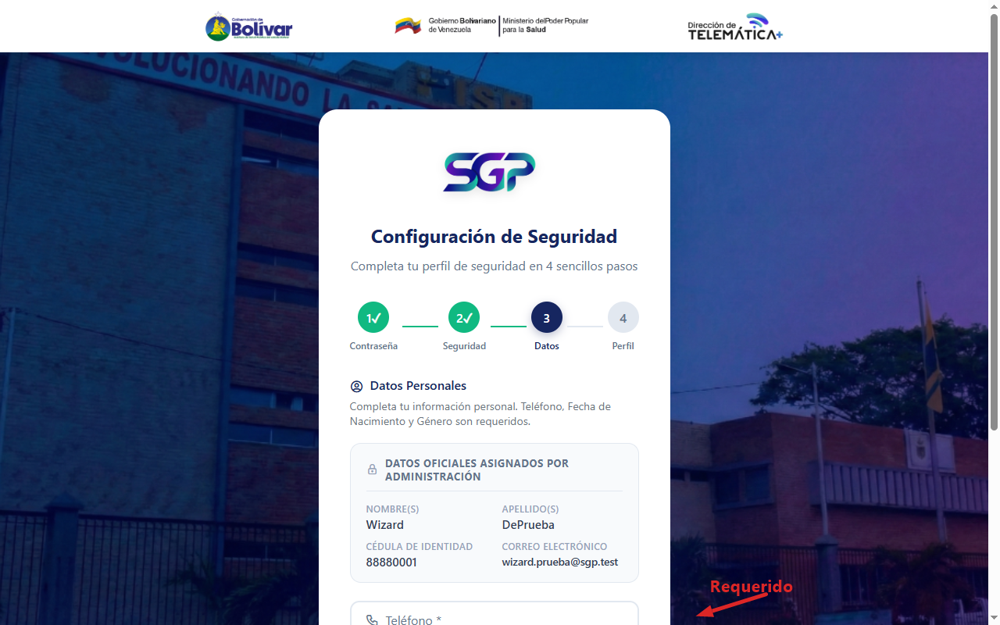
Teléfono: ingresar el número en formato 0414-1234567 (11 dígitos). El sistema valida en tiempo real que no esté ya registrado por otro usuario, mostrando un ícono de carga, ✓ o ✗ junto al campo.
Fecha de Nacimiento: ingresar la fecha en el campo enmascarado DD / MM / AAAA.
Género: seleccionar una opción del menú desplegable: Masculino, Femenino o Prefiero no decirlo.
Hacer clic en Siguiente.
Si alguno de estos campos ya fue registrado previamente (por ejemplo, en un restablecimiento de contraseña posterior), aparece bloqueado con un candado y la etiqueta "Registrado"; solo se solicitan los datos faltantes.
El último paso es "camaleónico": sus campos cambian según el rol de la cuenta. Para tu rol de Tutor, este paso solicita:
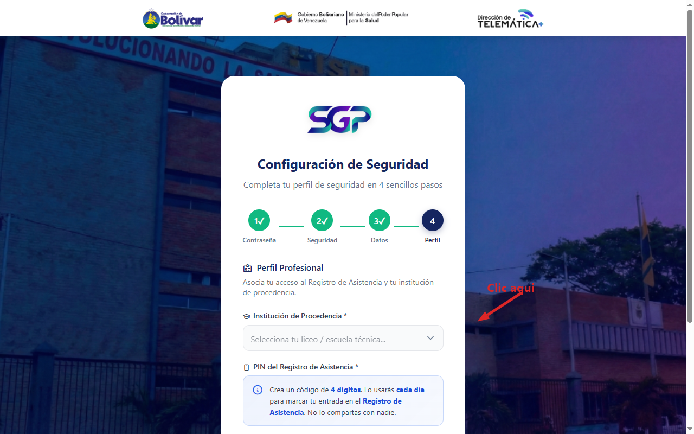
Cargo / Puesto: texto libre (ej. "Profesor", "Analista de Redes").
Departamento Asignado: si el Administrador ya te asignó un departamento al crear tu cuenta, aparece bloqueado con un candado; de lo contrario, debes elegirlo del menú desplegable de departamentos activos.
Hacer clic en Finalizar y Entrar.
Si la cuenta ya tenía estos datos configurados (caso de un restablecimiento), los campos pueden aparecer ya completos o bloqueados.
En resumen, "La Jaula" tiene 3 variantes posibles, definidas automáticamente por el sistema (no es una elección del usuario):
| Variante | Pasos mostrados | Cuándo ocurre |
|---|---|---|
| Completa | 1 → 2 → 3 → 4 | Primer ingreso de una cuenta creada por Admin/SuperAdmin. Indicador de 4 círculos. |
| Solo Pasos 1-2 | 1 → 2 | Restablecimiento de contraseña de una cuenta con perfil ya completo. Indicador de 2 círculos; el botón del Paso 2 dice Finalizar y Entrar. |
| Solo Pasos 3-4 | 3 → 4 | Primer ingreso tras un autoregistro (exclusivo de cuentas Pasante). El usuario aterriza directo en el Paso 3; los indicadores 1 y 2 aparecen marcados como completados (✓). |
No existe un botón para "saltar" u "omitir" "La Jaula". El único enlace disponible mientras está activa es Cerrar Sesión (con confirmación), al pie del formulario. Al completar el último paso visible, el sistema guarda todo en una única transacción y redirige al Dashboard correspondiente al rol.
La interfaz del SGP adopta un diseño Bento Box moderno, con componentes organizados en tarjetas bien delimitadas. La disposición es consistente en todas las vistas del sistema.
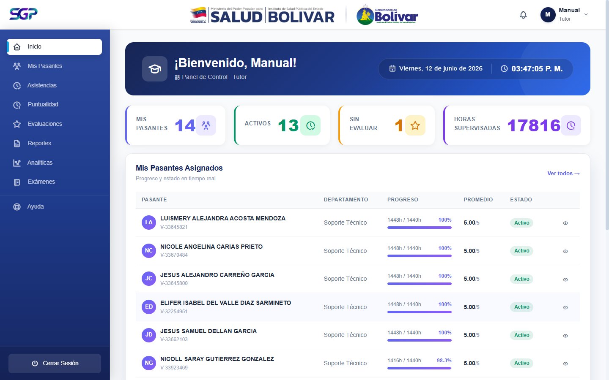
El panel lateral izquierdo contiene el menú de navegación principal. Sus elementos varían según el rol del usuario autenticado:
| Ícono / Sección | Descripción | Roles |
|---|---|---|
| Dashboard | Panel principal con métricas y resúmenes | Todos |
| Pasantes | Gestión completa del catálogo de pasantes | Admin |
| Asistencias | Registro y consulta de asistencias | Todos |
| Actividades | Actividades de servicio comunitario y pasantías | Admin Tutor |
| Períodos | Administración de períodos académicos | Admin |
| Usuarios | Creación y gestión de cuentas de usuario | Admin |
| Reportes | Generación de documentos PDF y Excel | Admin Tutor |
| Bitácora | Registro de actividades del pasante | Pasante |
| Ayuda | Manual de usuario interactivo | Todos |
La barra superior contiene:
En pantallas menores a 768px, el panel lateral se convierte en un dock inferior estilo móvil con íconos de acceso rápido. Las secciones adicionales se agrupan bajo el botón ⋯ Más.
Localizar el selector de período en la barra superior, identificado como Período Activo.
Hacer clic para desplegar la lista de períodos disponibles.
Seleccionar el período deseado. Todos los módulos del sistema actualizarán sus datos automáticamente.
El Dashboard es la primera pantalla visible al ingresar al sistema. Muestra un resumen ejecutivo del estado del período académico actual, adaptado al rol del usuario.
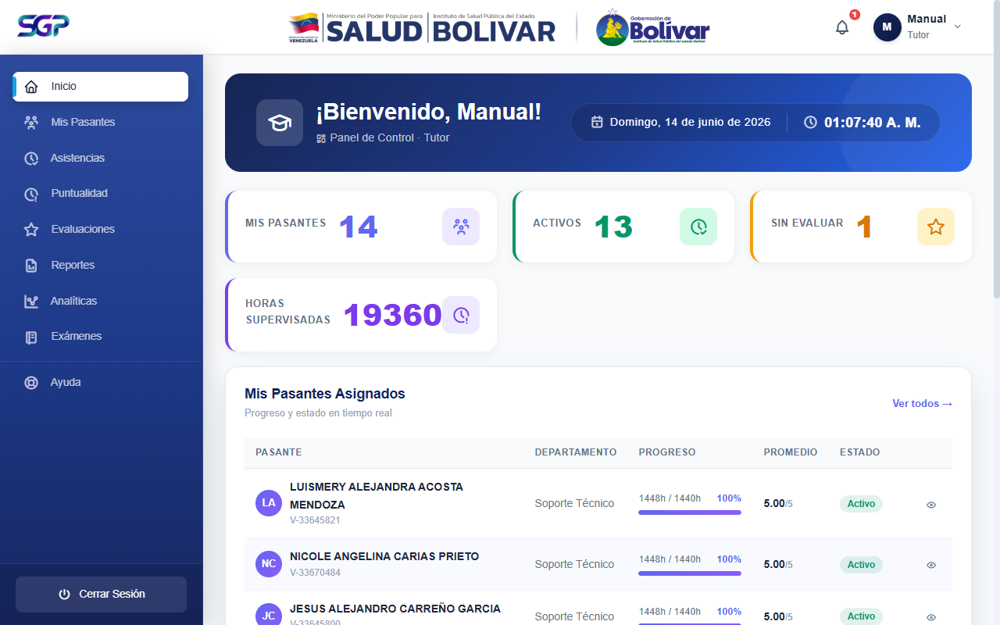
Las tarjetas en la parte superior del Dashboard muestran métricas clave de los pasantes asignados al tutor en el período activo:
| Tarjeta | Descripción |
|---|---|
| Mis Pasantes | Número total de pasantes asignados a este tutor en el período activo |
| Activos | Pasantes con estado "Activo" realizando pasantía |
| Sin Evaluar | Pasantes que aún no han recibido una evaluación de desempeño por parte del tutor |
| Horas Supervisadas | Suma total de horas de pasantía registradas por todos los pasantes asignados |
Debajo de las tarjetas, la sección "Mis Pasantes Asignados" muestra una tabla con el progreso, promedio de evaluación y estado de cada pasante supervisado, con acceso directo a su ficha completa.
La sección "Mis Pasantes" ofrece una vista detallada de cada pasante asignado al tutor en su departamento, con su progreso de horas, promedio de evaluaciones y accesos directos a su ficha completa. Se accede desde el ítem Mis Pasantes del panel lateral o desde la tarjeta KPI "Mis Pasantes" del Dashboard.
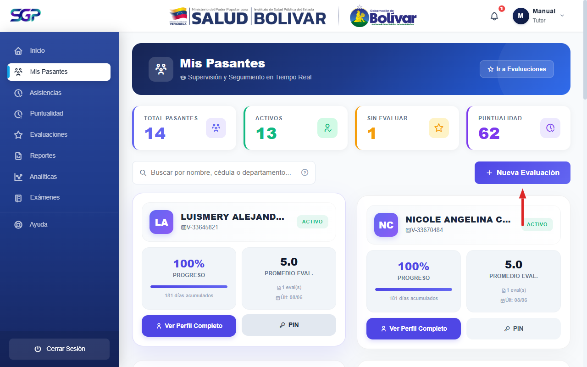
En la parte superior se muestran cuatro indicadores del departamento asignado:
| Tarjeta | Descripción |
|---|---|
| Total Pasantes | Cantidad de pasantes asignados al tutor en el período activo |
| Activos | Pasantes con estado "Activo" realizando su pasantía |
| Sin Evaluar | Pasantes activos que aún no tienen ninguna evaluación registrada |
| Puntualidad | Porcentaje de llegadas a tiempo del mes actual; enlaza al Dashboard de Puntualidad (Capítulo 9) |
El buscador permite filtrar la cuadrícula en tiempo real por nombre, apellido, cédula o departamento, sin necesidad de presionar Enter.
Cada tarjeta resume el estado individual del pasante:
Desde cada tarjeta, y desde la barra de acciones superior, el tutor puede:
Hacer clic en Ver Perfil Completo para abrir la ficha individual del pasante (datos personales, asistencias y evaluaciones).
Hacer clic en PIN (solo disponible para pasantes con estado "Activo") para restablecer el PIN de acceso al Kiosco de Asistencias, ingresando y confirmando un nuevo código de 4 dígitos.
Hacer clic en + Nueva Evaluación, en la barra de acciones superior, para registrar una evaluación de desempeño (ver Capítulo 15, Módulo de Evaluaciones).
Esta vista solo muestra los pasantes cuyo departamento asignado coincide con el del tutor. Si un pasante no aparece en la lista, contacta al Administrador para verificar su asignación de departamento.
El módulo de asistencias es el núcleo operativo del SGP. Registra la presencia diaria de cada pasante, calcula horas acumuladas y permite a los tutores y administradores hacer seguimiento en tiempo real.
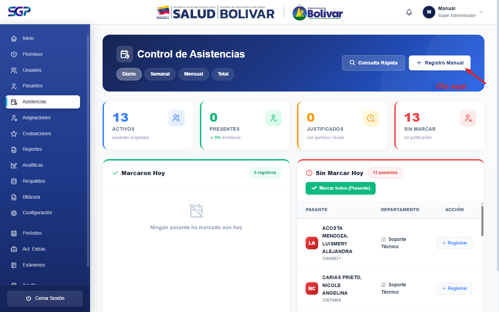
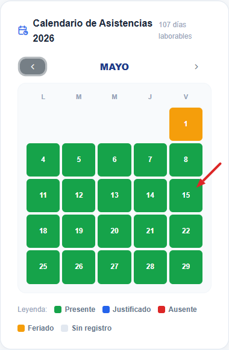
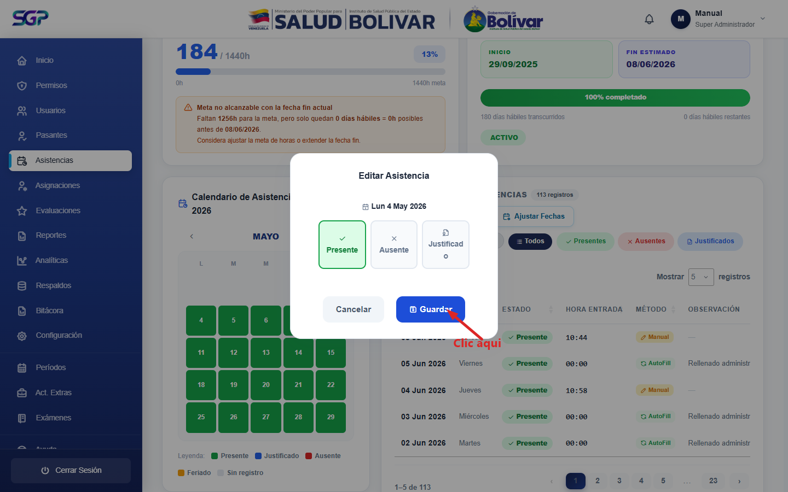
La vista mensual muestra un almanaque calendario con el registro de asistencia de cada día hábil. Los estados posibles son:
| Estado | Significado | Horas contadas |
|---|---|---|
| ✅ Presente | Asistencia completa al día | 8 horas |
| 🟡 Tarde | Llegó tarde pero cumplió la jornada | 8 horas (sin penalización) |
| ❌ Ausente | No asistió sin justificación | 0 horas |
| 📋 Justificado | Ausencia por causa debidamente documentada | 0 horas |
El sistema contabiliza siempre 8 horas por día de asistencia, independientemente de la hora de llegada. Los retardos no penalizan las horas acumuladas.
Navegar a Asistencias y seleccionar el pasante desde el buscador lateral.
En el almanaque, hacer clic sobre el día a modificar.
Seleccionar el estado correspondiente: Presente, Tarde, Ausente o Justificado.
Hacer clic en Guardar. El sistema actualizará el contador de horas automáticamente.
El Dashboard de Puntualidad permite al tutor analizar los hábitos de llegada de sus pasantes: porcentaje de asistencias a tiempo, retardos leves/severos y un ranking comparativo, con filtros por rango de fecha. Se accede desde el ítem Puntualidad del panel lateral o desde la tarjeta KPI "Puntualidad" del Dashboard y de Mis Pasantes.
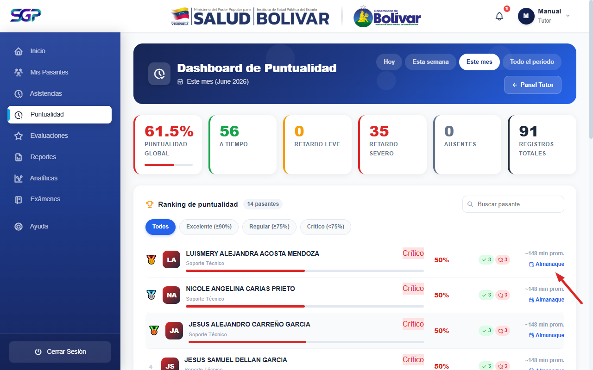
En la parte superior, las "pills" de rango permiten acotar el análisis a Hoy, Esta semana, Este mes o Todo el período. Las tarjetas KPI resumen el rango seleccionado:
| Indicador | Descripción |
|---|---|
| Puntualidad global | Porcentaje de asistencias marcadas a tiempo sobre el total de presencias del rango |
| A tiempo | Cantidad de asistencias dentro del margen permitido respecto a la hora asignada |
| Retardo leve | Llegadas tarde dentro del margen tolerable |
| Retardo severo | Llegadas tarde que exceden el margen tolerable |
| Ausentes | Días sin marcar asistencia dentro del rango |
| Registros totales | Suma de todas las asistencias evaluadas en el rango |
El ranking ordena a los pasantes del departamento de menor a mayor porcentaje de puntualidad, mostrando para cada uno su barra de progreso, el desglose de asistencias (a tiempo / leve / severo) y el promedio de minutos de retraso. Puede filtrarse por estado (Excelente ≥90%, Regular ≥75%, Crítico <75%) o buscarse por nombre.
Hacer clic en el enlace Almanaque de cualquier fila del ranking para abrir el almanaque anual de asistencia de ese pasante (ver Capítulo 8, Módulo de Asistencias).
Debajo del ranking, la sección "Últimos retardos" lista en detalle los registros de retardo más recientes (hasta 50), con fecha, pasante, hora de llegada y clasificación, también filtrable y con buscador propio.
Recuerda que, según las reglas del sistema, los retardos no penalizan las horas acumuladas: un día "Tarde" sigue contabilizando las 8 horas completas. Este dashboard es una herramienta de seguimiento de hábitos y no afecta el cálculo de horas.
El módulo de Actividades gestiona las tareas y compromisos académicos que los pasantes realizan fuera del registro de asistencia diaria. Se organiza en dos categorías principales:
| Tipo | Descripción |
|---|---|
| Servicio Comunitario | Actividades de impacto social desarrolladas en instituciones externas |
| Actividades de Pasantía | Tareas técnicas o académicas específicas del departamento asignado |
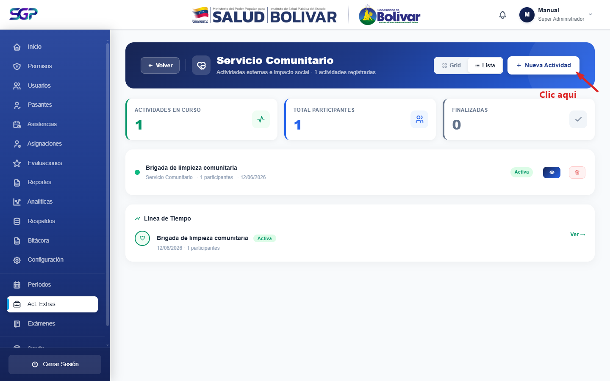
Navegar a Actividades y seleccionar la pestaña del tipo correspondiente (Servicio o Pasantía).
Hacer clic en + Nueva Actividad.
Completar: Nombre/Título, Tipo, Institución, Fecha de Inicio y Fecha de Fin.
Hacer clic en Guardar Actividad.
Cada actividad tiene asociada una lista de participantes. Para agregar pasantes a una actividad:
Abrir la actividad deseada haciendo clic en su nombre en la tabla.
En la sección Participantes, hacer clic en + Agregar Participante.
Buscar y seleccionar los pasantes a incluir.
Confirmar la asignación. Los pasantes recibirán una notificación automática en el sistema.
El catálogo de instituciones vinculadas a actividades se administra desde la pestaña Instituciones dentro del módulo de Actividades. Permite agregar, editar o desactivar instituciones externas.
El módulo de Reportes genera documentos oficiales para uso institucional. Todos los PDFs incluyen el logo institucional, datos del pasante y el período académico correspondiente.
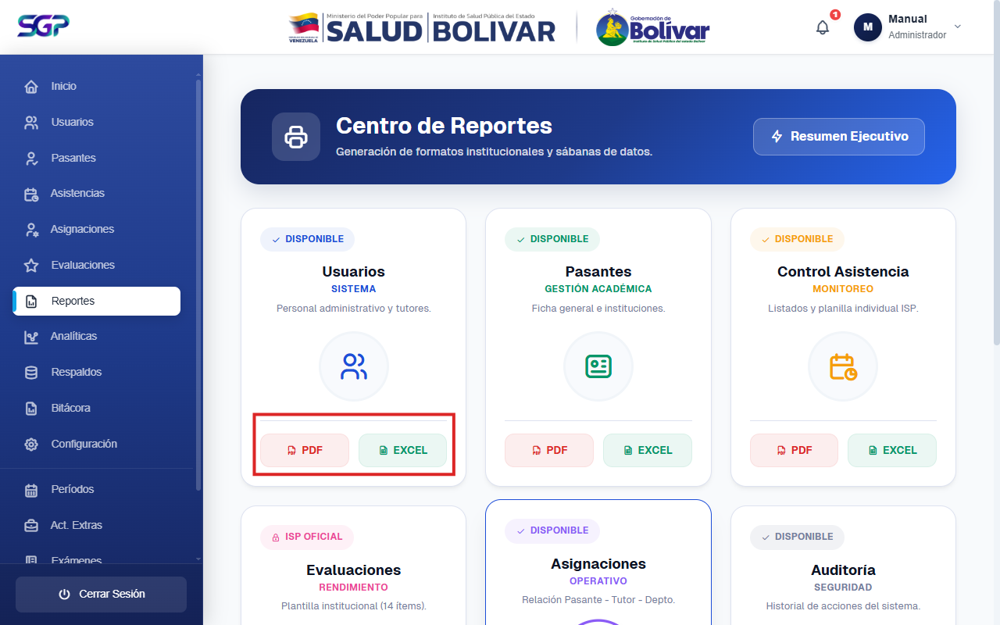
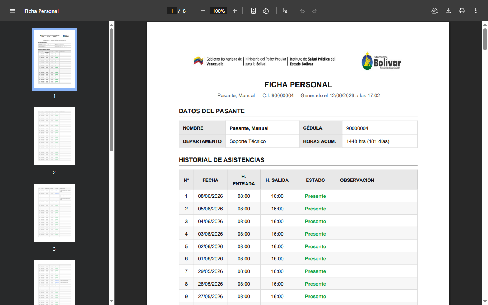
| Reporte | Descripción | Acceso |
|---|---|---|
| Ficha Personal Individual | Registro detallado de asistencias de un pasante por mes y semana | Admin Tutor |
| Evaluación ISP | Planilla de evaluación de desempeño en formato oficial institucional | Admin Tutor |
| Exportar Excel Individual | Historial de asistencias de un pasante específico en formato .xlsx | Admin Tutor |
Desde el módulo de Asistencias, buscar y seleccionar el pasante.
Hacer clic en el botón PDF (rojo) en la sección de acciones del pasante.
El documento se abrirá en una nueva pestaña del navegador con el visor de PDF.
Usar el botón ⬇ Descargar del visor o la función de impresión del navegador para obtener el documento físico.
El Kiosco de Asistencias es una pantalla de uso exclusivo en el área de entrada de la institución. Permite a los pasantes registrar su asistencia de forma autónoma ingresando su PIN de 4 dígitos, sin necesidad de credenciales de acceso al sistema completo.
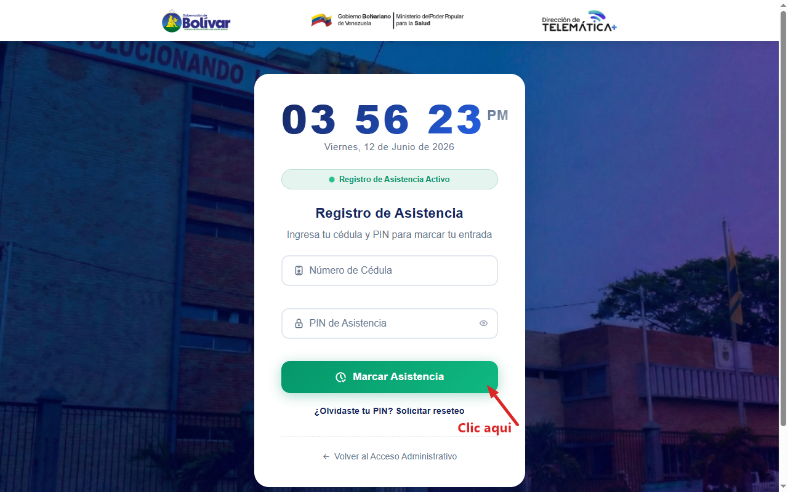
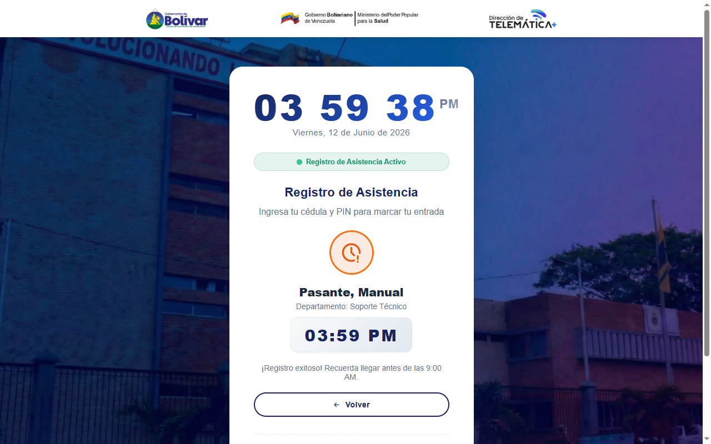
El pasante se acerca al Kiosco al llegar a la institución.
Ingresa su PIN de 4 dígitos usando el teclado numérico en pantalla.
El sistema valida el PIN y registra la asistencia con la hora exacta.
Se muestra una confirmación en pantalla con el nombre del pasante y el estado registrado (Presente o Tarde según la hora).
El Kiosco registra automáticamente el estado Tarde si el pasante ingresa después de la hora de entrada establecida para el período. El Administrador puede ajustar el umbral de hora de entrada desde la configuración del período académico.
Hacer clic en el avatar o nombre de usuario en la barra superior.
Seleccionar Mi Perfil.
Editar los campos disponibles: nombre, apellidos, teléfono, institución de procedencia.
Hacer clic en Guardar Cambios.
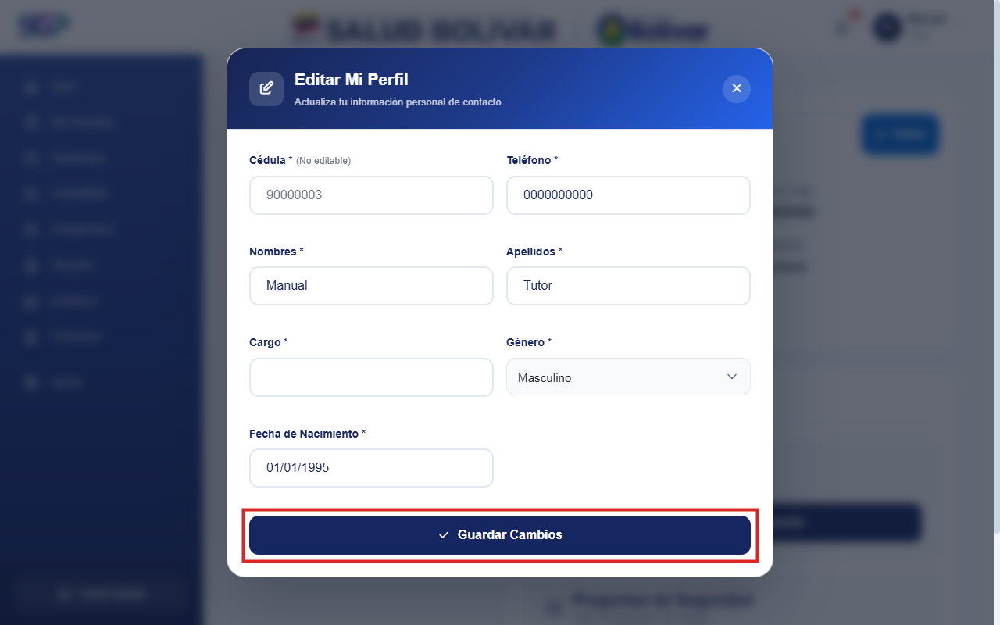
Desde el perfil, la sección Seguridad permite cambiar la contraseña actual. Se requiere ingresar la contraseña actual como verificación de identidad, seguida de la nueva contraseña (mínimo 8 caracteres).
| Problema | Causa probable | Solución |
|---|---|---|
| No puedo iniciar sesión | Contraseña incorrecta o cuenta desactivada | Verificar que la cédula y contraseña son correctas. Contactar al Administrador para reactivar la cuenta si está desactivada. |
| No aparece el botón de Constancia de Culminación | El período aún está Activo o las horas no están al 100% | Solicitar al Administrador verificar el estado del período y el total de horas registradas. |
| El estado "Activo" no se puede asignar al pasante | Falta departamento o fecha de inicio en el perfil del pasante | El Administrador debe completar la asignación de departamento y fecha de inicio desde el módulo de Pasantes. |
| El Kiosco no registra la asistencia | PIN incorrecto, pasante desactivado o sin período activo | Verificar que el pasante tenga estado "Activo" y que su PIN esté vigente. Resetear el PIN desde el panel de administración. |
| El PDF no se genera o muestra error | El navegador bloqueó la ventana emergente o hay error de servidor | Permitir ventanas emergentes (pop-ups) para el dominio del sistema en la configuración del navegador. |
| No veo datos en el Dashboard | No hay un período activo seleccionado | Usar el selector de período en la barra superior para elegir el período correspondiente. |
| La exportación Excel descarga un archivo vacío | No hay pasantes registrados en el período o filtro aplicado sin resultados | Verificar que el período tiene pasantes activos y remover cualquier filtro de búsqueda. |
| El sistema muestra "Error 403 — Acceso denegado" | El usuario intenta acceder a una sección fuera de su rol | Verificar el rol del usuario. Si el acceso es legítimo, contactar al Administrador para ajustar los permisos. |
| Las notificaciones de escritorio no aparecen | Permiso del navegador bloqueado o notificaciones de Windows desactivadas | Verificar el permiso en el ícono del candado de la barra de URL → Notificaciones → Permitir. También revisar Configuración de Windows → Sistema → Notificaciones y comprobar que Chrome/Edge están habilitados. |
Si el problema persiste después de aplicar las soluciones indicadas, contactar al Departamento de Soporte Técnico del instituto, describiendo el error exacto, la acción que lo generó y el rol del usuario afectado.
El módulo de Evaluaciones permite al Administrador y al Tutor registrar la calificación formal del desempeño del pasante, utilizando la planilla de evaluación oficial del ISP Bolívar con criterios ponderados.
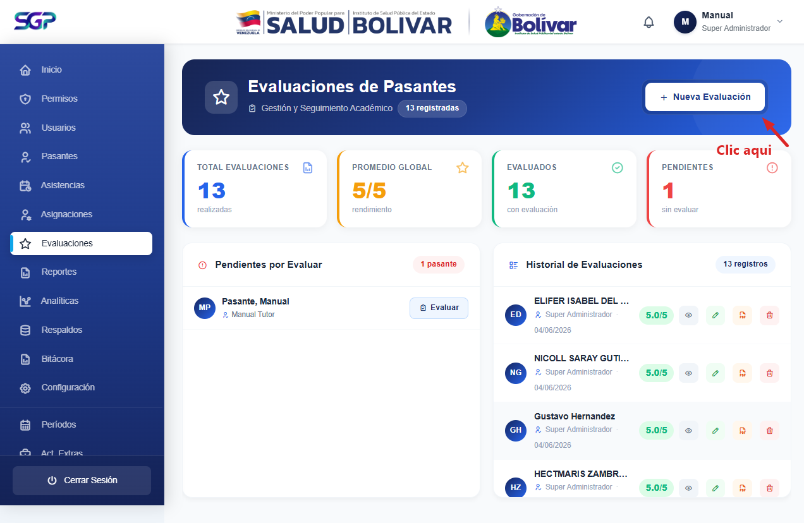
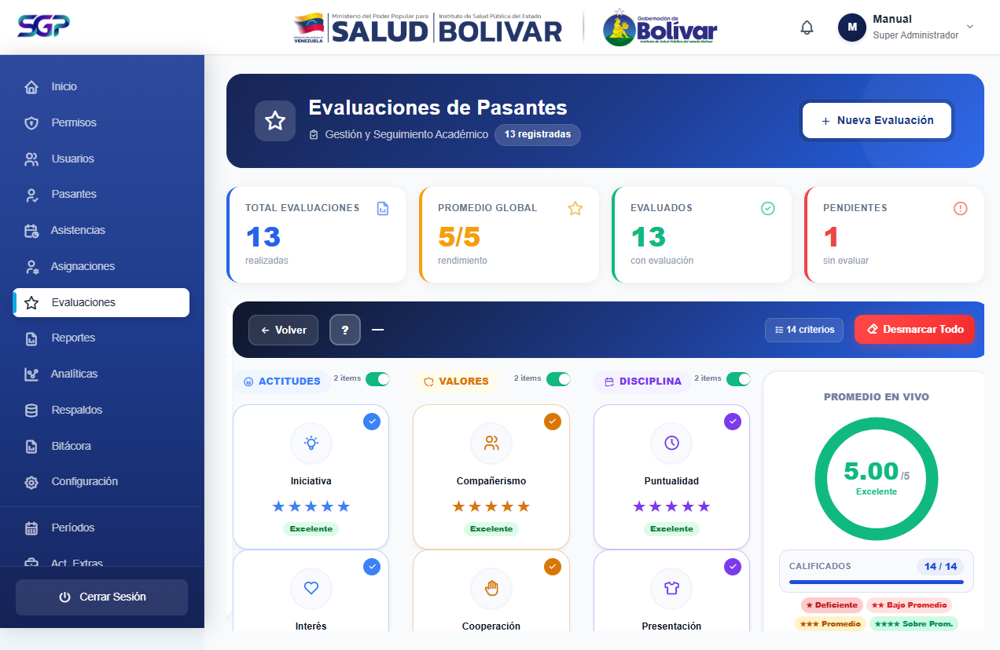
Navegar a Evaluaciones en el menú lateral.
Hacer clic en el botón + Nueva Evaluación.
Seleccionar el pasante a evaluar desde el desplegable.
Completar los criterios de la planilla: cada criterio tiene una calificación numérica con equivalencia cualitativa (Excelente, Bueno, Regular, Deficiente).
El sistema calcula automáticamente el promedio ponderado al guardar.
Hacer clic en Guardar Evaluación.
Desde el módulo de Reportes se puede generar la Planilla ISP en PDF, que incluye todos los criterios calificados, el promedio final y la firma del evaluador. Este documento es el requerido por la universidad para la carpeta del pasante.
Solo puede existir una evaluación activa por pasante por período. Si necesitas corregirla, usa el botón de edición en la fila del pasante.
El módulo de Exámenes permite crear evaluaciones rápidas tipo quiz con corrección automática. Los pasantes responden desde su propio panel y los resultados están disponibles en tiempo real.
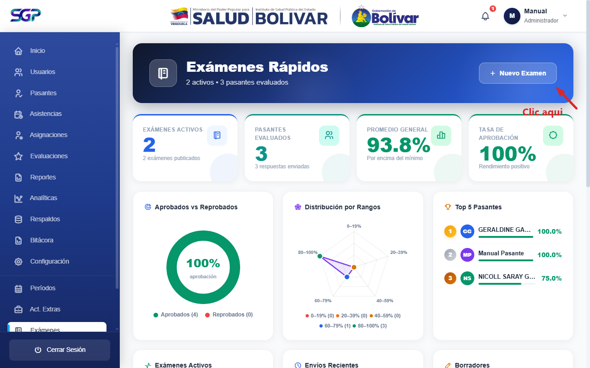
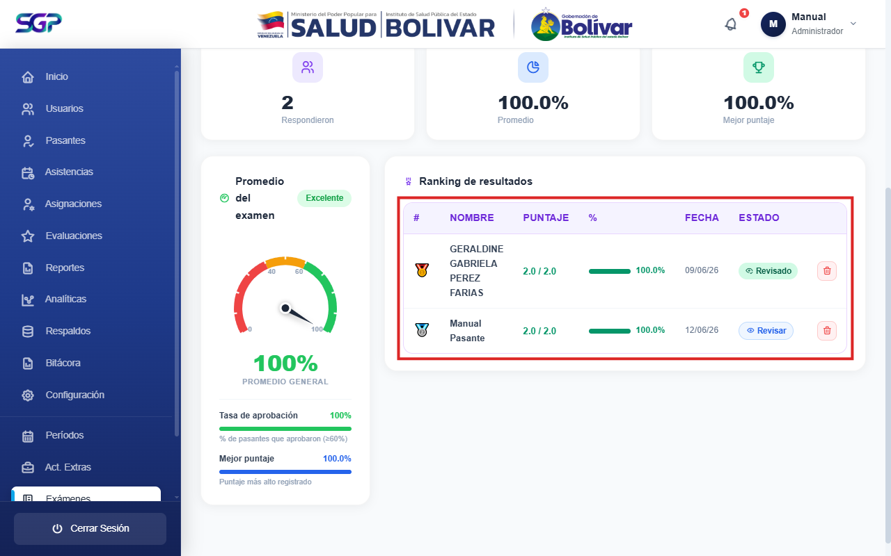
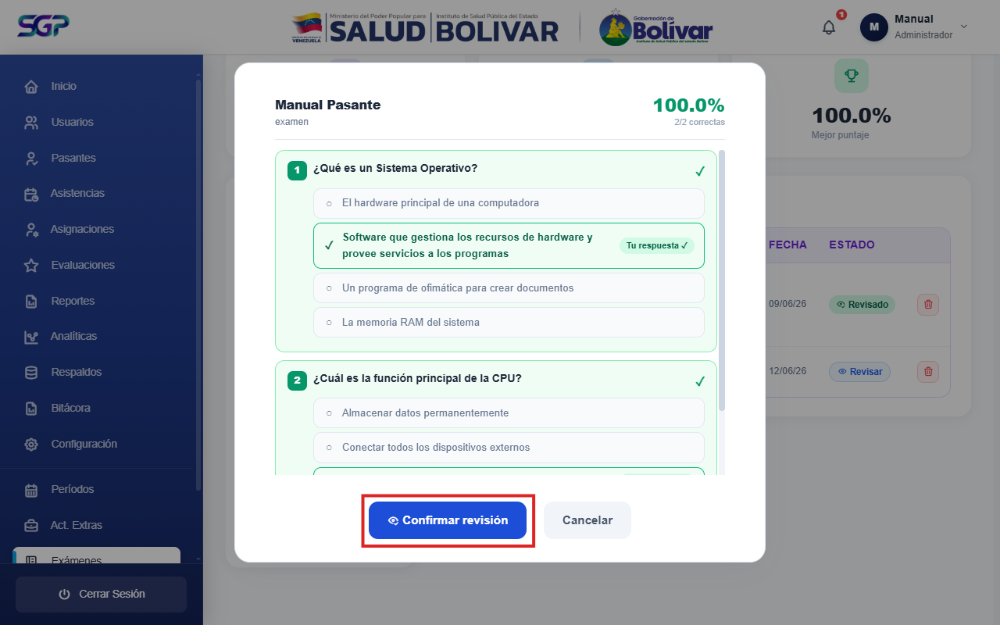
| Estado | Descripción | Pasante puede responder |
|---|---|---|
| Borrador | En preparación, no visible para pasantes | No |
| Publicado | Activo — los pasantes pueden acceder y responder | Sí |
| Cerrado | Sin más respuestas — solo consulta de resultados | Solo ver resultado |
El botón Revisar en la tabla de resultados abre un panel que muestra pregunta por pregunta el desempeño del pasante:
Abrir el examen y localizar el intento en la tabla de resultados.
Hacer clic en el botón Revisar (amarillo = aún no revisado).
Revisar el detalle y hacer clic en Confirmar revisión. El botón cambiará a Revisado.
A modo de referencia, así es el proceso que sigue el pasante para responder un examen publicado:
En el panel del pasante, navegar a Mis Exámenes.
Hacer clic en el examen Publicado disponible.
Responder cada pregunta seleccionando la opción correcta.
Hacer clic en Enviar Examen. El resultado aparece inmediatamente.
El pasante aprueba con el 60% o más del puntaje máximo. Puede tener múltiples intentos si el Administrador no cierra el examen.
Registro y Control de Asistencias de Pasantes
Instituto de Salud Pública del Estado Bolívar